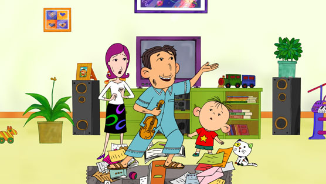
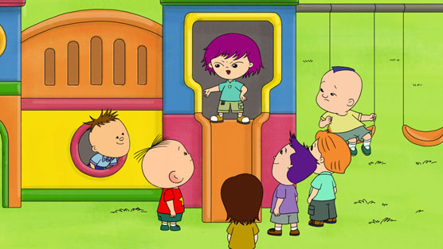
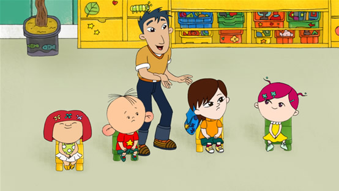
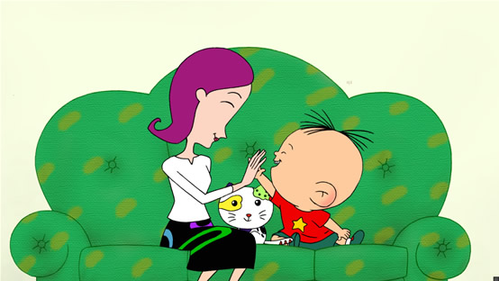
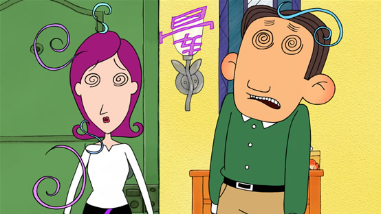
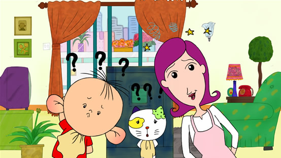
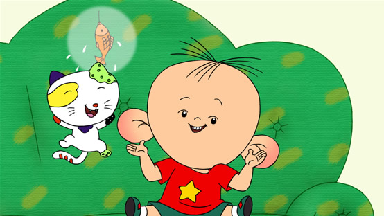
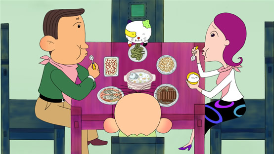
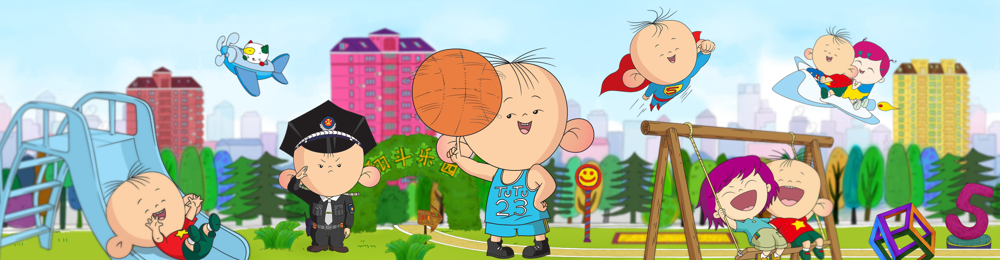

孩子从无知到有知，是一个漫长而琐碎的学习、探索过程，对每一位父母来说，都会经历其中的喜悦和烦恼，在孩子成长、教育的问题上更是面临着很多难题，平凡小孩胡图图一家作为故事的载体，讲述孩子在成长过程中一个个有趣的小故事，以引起观众的共鸣。
《大耳朵图图》系列的故事涉及幼儿生长的每一个领域，关注孩子和父母们关心的每一个话题，比如：我从哪里来？第一次上幼儿园、孩子的友谊、如何对待比自己小的弟弟妹妹、什么是爱，诚实最可贵、等等……
我们特意创造出图图这个可爱又糊涂的小孩形象，希望所有平凡的孩子都能象图图一样愉快、健康地成长，我们赋予图图纯真、善良、快乐的性格，希望那些望子成龙的爸爸妈妈能看到孩子身上最宝贵的品质。
——《大耳朵图图》主创团队